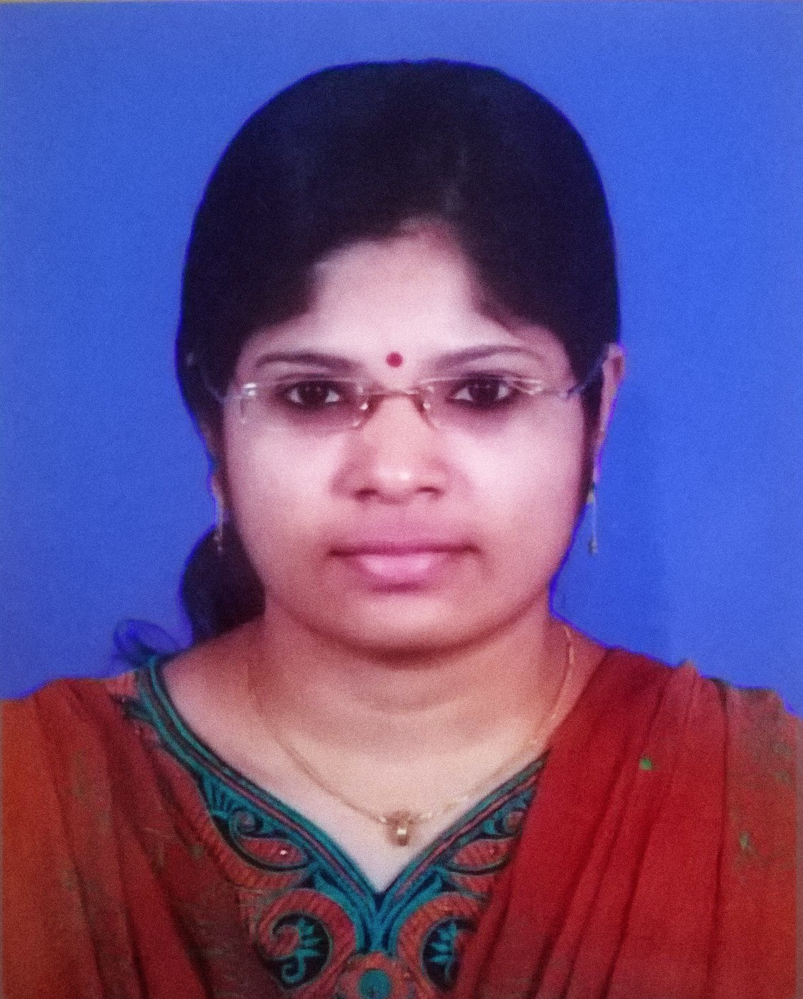

Vinaya G

Summary
Detail-Oriented and self-motivated individual with a passion for
web development, seeking an opportunity to leverage my
self-taught skills and dedication to excel as a web developer.
My experience as a data entry operator has honed my attention
to detail and problem solving abilities, which I am eager to apply
to building innovative and user-friendly web applications. I am
committed to continous learning and staying up-to-date with the
latest web development technologies to contribute effectively to
a dynamic development team. My ultimate goal is to transition
into a freelance web developer, where I can offer my expertise
to clients while delivering high-quality, customized solutions.
Education
- 2015-2016
Diploma in Multimedia
- 2014 - 2015
Data Entry and Console Application
- 2009 - 2014
Bachelor’s of
Computer Application
Kerala University
Work experience
Apprentice -Kerala State Pollution Control Board
Kollam | 2016 - 2017
- Assisted in the creation and maintenance of a data entry
kiosk for processing NOC (No Objection Certificate) requests
for industrial clients.
- Conducted accurate data entry tasks, including the typing of
NOC documents, tapal (correspondence) entry, and other
administrative duties, ensuring data integrity and confidentiality.
- Interacted professionally with industrial clients, providing
support and guidance in completing NOC application forms.
- Maintained meticulous records of NOC requests and
generated reports for internal and external stakeholders.
- Demonstrated a strong commitment to quality control and
adherence to regulatory standards, contributing to the board’s
efforts in environmental protection.
Skills
- HTML : ⭐⭐⭐⭐
- CSS : ⭐⭐⭐⭐
- JAVASCRIPT : ⭐⭐⭐
- NODE.JS : ⭐⭐⭐
- REACT & REDUX : ⭐⭐⭐
- WORDPRESS : ⭐⭐⭐
- GRAPHIC DESIGN : ⭐⭐⭐
- TYPING : ⭐⭐⭐⭐⭐
- MICROSOFT OFFICE : ⭐⭐⭐
Certifications
Other